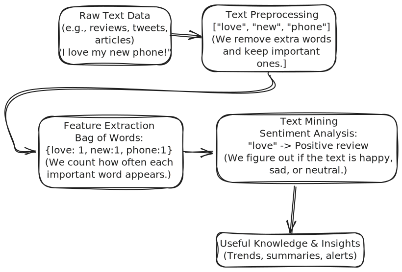

Overview of Advanced Features of Data Mining
|
├── 1. Mining Complex Data Objects
│
├── 2. Mining in Specialized Databases
│ ├── Spatial Databases
│ ├── Multimedia Databases
│ ├── Time Series and Sequence Data
│
├── 3. Mining Text Databases
│
└── 4. Mining the World Wide Web
- So far, you’ve seen how data mining works with structured data — like numbers, categories, and clearly
organized tables. But in the real world, data comes in all shapes and sizes, and that’s where the
advanced features of data mining come into play.
- This unit explores how we mine complex and unstructured data types that go way beyond spreadsheets. We
begin by looking at complex data objects — which could include combinations of text, images, spatial
data, and more. Then we dig into specialized databases, such as spatial databases (used in mapping and
GPS), multimedia databases (involving images, audio, video), and time series or sequence data (used in
stock markets, weather forecasts, and biological sequences).
- We also touch on the exciting area of text mining, which is all about extracting meaning from large
volumes of unstructured text — think emails, documents, or social media posts. Finally, we wrap up with
mining the World Wide Web, where we explore how search engines and recommendation systems use data
mining techniques to make sense of the massive, messy information available online.
Mining Complex Data Objects — Jab Data Sirf Tables aur Numbers Nahi Hota
Ab tak hum apni data mining journey mein mostly structured data ke saath kaam kar rahe the — jaise rows aur
columns mein hota hai, spreadsheets ya relational databases jaisa. Jaise customer info, sales records, ya
product listings. Ye saara data clean aur table format mein hota hai, aur traditional data mining tools ke saath
easily kaam karta hai.
Lekin real world ka data itna simple nahi hota. Asal mein, jo data hum roz use karte hain, wo kaafi zyada
complex hota hai.
Socho zara:
- Tumhare phone ke photos aur videos
- Map app ka live GPS location
- Text messages ya social media posts
- Browsing history aur tumhare click karne ka pattern
Ye sab complex data objects ke examples hain. Inhe ek normal table mein fit nahi kiya ja
sakta, par inme bhi kaafi valuable patterns chhupe hote hain. Yahin se complex data objects ki
mining start hoti hai.
Complex Data Object Kya Hota Hai?
Ek example se samajhte hain. Socho ek Instagram post — usme ho sakta hai text, ek image, video clip, hashtags,
post ka time, aur GPS location bhi ho.
Toh complex data object basically wo data hota hai jo sirf simple number ya text nahi hota —
jaise graphs, multimedia, sequences, ya location based info. Inme internal structure ya connections hote hain
jinke analysis ke liye special techniques chahiye hoti hain.
- Examples jaise:
- Ek social network ka graph (kaun kis se connected hai)
- Multimedia files jaise images, audio, video
- Map ke location points
- User ke steps ka sequence (jaise app use karte waqt steps)
Jo normal tools hote hain wo is tarah ke complex data ko handle karne ke liye banaye hi nahi gaye — isliye hume
special methods ki zarurat padti hai.
Complex Data Ko Mine Karna Itna Mushkil Kyun Hai?
Socho tum animal photos analyze kar rahe ho taaki species pehchani ja sake. Simple databases mein toh numbers
compare karte ho, par yahan tumhe pixels, patterns, aur visual features ke saath kaam karna padta hai — rows aur
columns nahi milte.
Yahi hota hai challenge complex data ka: Data ke andar ka structure, format aur relations itne
complex hote hain ki traditional techniques unhe easily handle nahi kar sakti.
Aise hi challenges tab aate hain jab tum:
- GPS coordinates se movement track karte ho
- Video clip se emotion detect karna chahte ho
- User behavior analyze karte ho by following their click path
Is type ke data kuch aise forms mein aate hain:
- Graphs — jahan relationships show karte hain (jaise friends network)
- Sequences — jahan time ke according order hota hai (jaise steps ya clicks)
- Multimedia — jahan meaning chhupa hota hai images, sounds ya motion mein
Complex Objects Ko Kaise Mine Karte Hain?
Complex data ko handle karne ke liye hum apne purane methods ko hatate nahi — unhe modify karte hain. Chalo
dekhte hain kuch common strategies jo is area mein use hoti hain.
- Feature Extraction: Hum complex data ko simple numbers mein convert karte hain. Jaise ek
image se hum color intensity, edges, ya shape ke patterns nikaalte hain.
- Similarity Measures: Hume better tareeke chahiye compare karne ke liye. Do images ho sakti
hain alag pixels ke, par unka color distribution similar ho.
- Graph aur Tree Mining: Jab data linked hota hai (jaise web pages ya family trees), tab hum
aise algorithms use karte hain jo nodes, edges aur connections samajh sakein.
- Sequence Pattern Discovery: Ye tab kaam aata hai jab data time-based ya ordered hota hai —
jaise clickstreams, DNA ya shopping steps — aur hume patterns find karne hote hain.
- Multimodal Mining: Jab alag-alag types ka data combine karke analyze karte hain. Jaise ek
YouTube video jisme visuals, audio aur comments sab analyze karte hain taaki full picture mile.
Toh complex data objects ki mining ka matlab hai simple values ke paar jaake, special
techniques use karke real-world ke messy data mein se patterns dhoondhna.
Mining in Specialized Databases — Kyunki Har Data Table Wala Nahi Hota
Ab tak humne complex data objects ke baare mein baat ki — jahan data sirf numbers ya plain text nahi hota. Ab
chalte hain specialized databases ki duniya mein. Ye databases special types ke data ko store
aur manage karne ke liye banaye jaate hain — jaise location points, images, ya time-stamped data. Aur in data ko
mine karne ke liye bhi hume unke type ke hisaab se alag techniques use karni padti hain.
Chalo dekhte hain kuch important types ke specialized databases aur samajhte hain ki data mining kaise kaam
karti hai inke saath.
Spatial Databases — Jab Jagah Bhi Important Hoti Hai
Socho Google Maps, food delivery apps, ya weather apps ke baare mein. Ye sab spatial data pe kaam karte hain
— yaani aisa data jo kisi location se linked hota hai. Spatial database ek aisa database hota
hai jo location-based data store karta hai — jaise coordinates, boundaries, ya routes.
Isme store hota hai:
- Coordinates (latitude aur longitude)
- Routes aur paths
- Boundaries ya regions (jaise cities, zones, ya areas)
Spatial data ko kyun mine karte hain? Kyunki isse aise questions ke answers milte hain:
- Kahan par traffic jams sabse zyada hote hain?
- Kaunse areas baarish ya flood se zyada affected hote hain?
- Nayi shop kahan kholni chahiye taaki zyada log aayein?
Spatial data special isliye hota hai kyunki yeh sirf "kya" nahi batata, balki "kahan" bhi batata hai. Isliye
mining techniques ko distance, direction, aur location ko dhyan mein rakhna padta hai. Kuch common techniques
hain:
- Clustering nearby points (jaise same temperature waale areas ko group karna)
- Spatial association rules (jaise high humidity waale areas mein allergy cases zyada hote
hain)
- Neighborhood analysis (jaise kisi jagah ke aas-paas kya ho raha hai?)
Spatial mining kaafi useful hoti hai urban planning, logistics, delivery services, disaster management, aur
even location-based ads mein.
Multimedia Databases — Jab Baat Text aur Numbers Se Aage Badh Jaati Hai
Ab socho YouTube, Spotify, ya tumhare phone ki photo gallery. Ye sab multimedia content handle karte hain —
jaise images, audio, aur videos. Multimedia database in rich media files ko store aur manage
karne ke liye hota hai, saath hi unse related info bhi — jaise tags, duration, quality, etc.
Isme hota hai:
- Photos, videos, aur audio files
- Unse judi info jaise tags, duration, resolution, ya timestamps
Multimedia data ko mine kyun karte hain? Kyunki isse kaam aata hai jaise:
- Kaunse type ke videos viral jaate hain, yeh samajhna
- Images ko unke content ke hisaab se group karna
- Voice patterns ko specific logon se match karna
Multimedia data ko mine karne ke liye pehle images, audio ya video ko features (yaani measurable values) mein
convert karna padta hai. Example:
- Images: color, edges, shapes
- Audio: pitch, tempo, frequency
- Videos: motion, scene changes
Jab ye values mil jaati hain, toh phir usual mining techniques jaise classification ya clustering use hoti
hain. Jaise: “Sab indoor aur outdoor photos ko group karo.”
Multimedia mining kaafi useful hoti hai entertainment, security (jaise facial recognition), content
suggestion, aur medical image analysis (jaise MRI scan) mein.
Time Series aur Sequence Data — Jab Time Ki Value Hoti Hai
Socho stock prices ka daily record, temperature logs, ya tumhare fitness app ka heart rate data. Ye sab
time-based data hote hain. Time series data wo hota hai jo time ke interval pe record kiya
gaya ho — jaise daily temperature ya monthly sales.
A basic time series kuch aise dikhta hai:
Day 1: 20°C
Day 2: 22°C
Day 3: 25°C
... aur aise hi aage.
Time-based data ko mine karne ka faayda? Kyunki time ke patterns se hum:
- Future values ka prediction kar sakte hain (jaise sales ya stock prices)
- Koi unusual activity pakad sakte hain (jaise achanak heart rate spike hona)
- Seasonal trends samajh sakte hain (jaise December mein shopping badh jaati hai)
Time-series mining ke kuch common kaam hote hain:
- Trend analysis: Kya badh raha hai ya ghat raha hai time ke saath?
- Seasonality detection: Kya koi pattern baar-baar repeat ho raha hai?
- Sequential pattern mining: Kaunse events ek specific order mein hote hain?
Example: “Jo log product demo video dekhte hain, wo mostly 2 din baad product kharid lete hain.”
Time series mining ka use finance, weather forecasting, medical monitoring, aur customer behavior tracking
mein hota hai.
Quick Recap — Data Type Ke Hisaab Se Sahi Mining Method
Jab hum kehte hain “Mining in Specialized Databases,” iska matlab hota hai ki jis type ka data ho, uske liye
sahi tools aur methods ka use karna. Ek quick recap:
- Spatial databases jagah aur location se related hote hain — jab "kahan" important ho.
- Multimedia databases visuals, sound, ya videos ke saath kaam karte hain — jab content rich
ho.
- Time series data time ke saath change hone waale values hote hain — jab order aur time
pattern matter karta ho.
Har type ke data ke liye alag tools chahiye — aur har ek ko sahi tareeke se samajhna hi smart insights nikaalne
ki key hai.
Text Databases ki Mining — Jab Words Ban Jaye Knowledge
Ab tak humne structured data ke baare mein baat ki — jaise timestamps, locations ya images. Ab hum move karte
hain ek naye type ke data ki taraf: text data. Ye thoda alag hota hai.
- Text data structured nahi hota, kabhi kabhi messy bhi hota hai, aur usmein hidden meaning hota hai jo
machines ke liye samajhna mushkil hota hai.
- Ek chhota sa example dekho:
- “This product is fire 🔥” — yeh clearly ek accha review hai.
- “This phone catches fire 🔥” — ab yeh serious problem hai.
- Same word, lekin meaning bilkul alag.
- Isi complexity ki wajah se text mining interesting bhi hai aur challenging bhi.
Text Mining hota kya hai?
- Text Mining ka matlab hai unstructured text data se useful info nikalna.
- Ismein computers ko language samajhne ke liye train karna padta hai — sirf letters nahi, balki unka matlab
bhi.
- Text mining ke kuch common goals hote hain:
- Documents ke collection se topics dhoondhna.
- Sentiment samajhna (positive, negative, neutral).
- Similar texts ko group karna.
- Important keywords ya phrases pe focus karna.
Text Mining kyun karte hain?
- Text data har jagah hai:
- Companies chahte hain ki wo customer reviews ko analyse karein.
- Governments public opinion track karte hain social media se.
- Search engines (jaise Google) web pages ko text ke basis pe rank karte hain.
- Chatbots (jaise main!) natural language samajhne ke liye text mining use karte hain.
- Text mining se hum itne saare shabdon ko useful aur structured info mein badal sakte hain.
Text Mining kaise kaam karta hai?
Text mining ka process hota hai raw text ko useful knowledge mein convert karne ka.
1. Text Preprocessing — Pehle Saaf Safai
- Raw text directly analysis ke layak nahi hota. Jaise cooking se pehle sabziyaan katni padti hain, waise hi
yahan bhi cleaning zaroori hai.
- Important cleaning steps:
- Tokenization: Text ko chhote parts (tokens) mein todna.
"I love ice cream" → ["I", "love", "ice", "cream"]
Stop Word Removal: Common words jaise "is", "the", "and" ko hataana.
Stemming / Lemmatization: Words ko unke root form mein laana.
"running", "runs", "ran" → "run"
Yeh steps text ko simple banate hain taaki actual content pe dhyan diya ja sake.
2. Feature Extraction — Text ko Machine-Friendly Banana
- Cleaned text ko numbers mein convert karna padta hai taaki machines samajh sakein.
- Kuch common methods:
- Bag of Words: Documents mein har word kitni baar aaya uska count karta hai.
- Word order ka koi role nahi hota, sirf word ki frequency dekhi jaati hai.
- TF-IDF: Word ki importance aur uniqueness ke basis pe usse weight dena.
- "Good" jaise common shabd har jagah milte hain, lekin "revolutionary" jaise words special hote hain.
- Advanced methods mein Word Embeddings (jaise
Word2Vec aur BERT)
use hote hain jo word ke context ko samajhte hain.
3. Text Mining Techniques — Patterns Dhoondhna
- Ab jab text numbers mein hai, toh hum classic mining techniques laga sakte hain:
- Classification: Category predict karna (e.g., spam ya nahi spam).
- Clustering: Similar documents ko group karna (e.g., sports articles ek saath).
- Sentiment Analysis: Tone samajhna — positive, negative, ya neutral.
- Topic Modeling: Documents ke themes dhoondhna (jaise "politics", "health",
"technology").
- Example: Hazaaro product reviews ko scan karke dekhna ki kis review mein battery, price ya camera ki baat
ho rahi hai — isse bolte hain topic modeling.
Text Mining ke Real-Life Use Cases
- Email Filtering: Spam aur non-spam emails ko alag karna.
- Social Media Monitoring: Public opinion track karna jaise elections ya brand campaigns ke
time.
- Customer Support: Complaints ko identify karke right team tak pahunchana.
- Legal / Medical Fields: Important points nikalna hazaaro documents se — chahe court ke ho
ya medical reports.

Mining the World Wide Web — Internet ko Samajhna Aur Uski Complexity
-
Internet pe billions web pages, blogs, videos, reviews aur dusra content hota hai. Ye human knowledge,
thoughts aur interactions ka sabse bada collection hai.
-
Lekin web thoda tricky hai, kuch problems bhi hoti hain:
- Data mostly unstructured hota hai (jaise ki plain text, images).
- Kuch data thoda structured hota hai (jaise HTML pages).
- Har second naya content add hota rehta hai.
- Information alag-alag websites pe scattered hoti hai.
-
Web mining ka matlab hai is huge aur unorganized data se useful patterns aur info nikalna.
Web Mining ka Meaning
-
Web Mining ka matlab hai web data se knowledge nikalne ke liye data mining techniques use karna. Ye mainly 3
types ka hota hai:
- Web Content Mining – Web pages ke andar ka content analyze karna.
- Web Structure Mining – Web pages ke beech ke links ko samajhna.
- Web Usage Mining – Users ka behavior dekhna, jaise wo site pe kya karte hain.
-
Har type web data ko samajhne me important role play karta hai. Aage hum inko detail me dekhenge.
1. Web Content Mining — Page ka Content Samajhna
-
Web Content Mining web pages ke content se info nikalta hai.
-
Isme yeh sab aata hai:
- Text jaise blogs, articles, product reviews
- Images aur videos jaise multimedia content
- Titles, tags, alt text jaise metadata
-
Ye process basic text mining jaisa hi hota hai, but web pe apply hota hai.
-
Example: Agar hume pata karna hai ki food blogs me kaunse pizza toppings sabse zyada
mention hote hain, to web content mining is tarah se kaam karega:
- Food blogs crawl karke relevant text content nikalega
- Ads aur extra content hata ke data clean karega
- "Pepperoni", "mushroom", "pineapple" jaise words ki frequency check karega
-
Use Cases:
- Search engine results better banana
- E-commerce me product categories improve karna
- News websites pe similar articles group karna
2. Web Structure Mining — Links ke Relation Samajhna
-
Web ko ek badi graph jaise socha ja sakta hai jahan har page ek node hota hai, aur links unke beech
connection hote hain.
-
Web Structure Mining ye dekhne me help karta hai ki kaunse pages kis se linked hain aur unka hierarchy kya
hai.
-
Example: Google ka PageRank algorithm check karta hai ki kisi page pe kitne aur kaise links
aaye hain, us basis pe uski importance decide hoti hai.
-
Samjho: Jaise koi insaan group me sabse zyada respect paata hai agar sab uski baat mante
hain, waise hi ek page jise trusted pages link karte hain, zyada important hota hai.
-
Use Cases:
- Related page groups ko dhoondhna (sports, politics, etc.)
- Spam ya fake websites identify karna
- Related content suggest karne wale recommendation systems
3. Web Usage Mining — User Behavior Ko Samajhna
-
Web Usage Mining users ke website pe behaviour ko analyze karta hai.
-
Ye cheezein dekhta hai:
- Kaunse pages visit hue
- Kaunse links pe click kiya, kaise site pe ghooma
- Kitni der site pe raha aur kab nikal gaya
- Shopping behavior, purchases ka pattern
-
Ye data collect hota hai:
- Server logs se
- Cookies aur browser tracking se
- Clickstream data se
-
Example: Agar aapne kisi website pe mobile dekha, to aapko dusri jagah bhi uska ad dikhne
lagta hai — ye Web Usage Mining ki wajah se hota hai.
-
Use Cases:
- Netflix, YouTube jaise platforms pe personalized content
- Shopping sites pe “Frequently bought together” suggestions
- User activity ke basis pe website design improve karna
Integrated Example: YouTube pe Web Mining
-
YouTube jaise platform teenon web mining types ka use karta hai:
- Web Content Mining: Video titles, description aur tags analyze karta hai
- Web Structure Mining: Playlists aur channel ke connections explore karta hai
- Web Usage Mining: Views, likes, watch history jaisi cheezein dekhkar content suggest
karta hai
Web Mining ka Importance
-
Web Mining important hai kyunki ye web data ko useful knowledge me badalta hai. Iske fayde:
- Search engine ki performance better hoti hai
- Digital platforms pe personalized experience milta hai
- Trends aur logon ki opinion track ki ja sakti hai
- Business aur customer insights improve hote hain
-
Challenges:
- User data collect karne pe privacy aur ethics ke issues
- Itna sara data handle karna mushkil hota hai
- Data accurate aur trustworthy hona chahiye
Conclusion
-
Web Mining ka goal hai web se useful insights nikalna, jisme:
- Content, links aur user behavior tino cheezein analyze ki jaati hain
- Real-world use ke liye theoretical knowledge ka use hota hai
-
Jaise jaise internet grow karega, Web Mining aur bhi important banega smart decisions aur intelligent
systems ke liye.